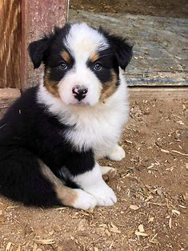
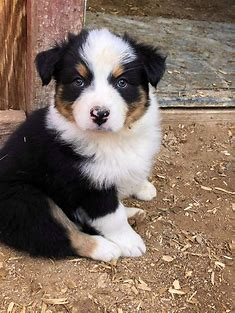

Introduction
Welcome to Mila's Website! This dedicated online space is a tribute to the delightful and charming Mila, an Australian Shepherd with a captivating brown and white coat. Join us on this digital journey as we celebrate Mila's unique personality, her adventures, and the special bond she shares with her loved ones. Get ready to explore Mila's world and discover the joy and companionship she brings to all those fortunate enough to know her.
Photos
 

Personality
Mila, a loving and loyal companion, is both fiercely protective and deeply attached to her loved ones. Her vigilant nature prompts her to growl at perceived threats, while her infectious joy is evident through her constant camera-ready smile. With unwavering devotion, Mila embodies the unbreakable bond between humans and their beloved furry companions.
Favorite Activities
Let me tell you about Mila's favorite activities! She's a bundle of energy and loves having a blast. Whether it's playing hide-and-seek with her bones, catching balls with me and her adoptive mom, or attempting to bury her bone under the sheets of my bed like a little goofball, Mila always keeps us entertained. Her playful nature brings so much joy to our lives, and she's truly our best friend.
Memorable Moments
Let me share some memorable moments I've had with Mila! Teaching her to go say hello to people was both funny and adorable. She used to be so protective, but she's been gradually improving. Watching her try to run and jump into my arms is the cutest thing, even though she hasn't quite mastered the height yet. Instead of jumping high, she throws herself sideways at me, which always brings a smile to my face. Another hilarious moment is when I try to dress her up in clothes and outfits. Mila freezes and refuses to move, as if she's saying, "No way, I'm not budging!" It's a riot to see her strike those frozen poses. These moments with Mila are truly priceless, filled with laughter, love, and the unique quirks that make her so special to me.
Conclusion
Mila, my awesome dog, is the absolute best! She's got all the moves and knows how to have a good time. Whether we're playing fetch at the park or snuggling up on the couch, she's always up for an adventure. Mila brings so much fun and excitement to my life, and I can't imagine a day without her wagging tail and goofy antics. She's my loyal sidekick and the coolest four-legged friend a person could ask for. Mila, you rock!